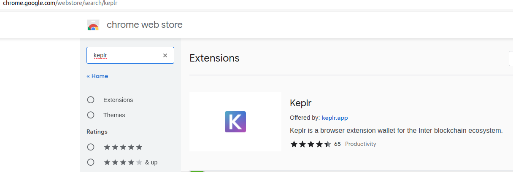
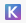
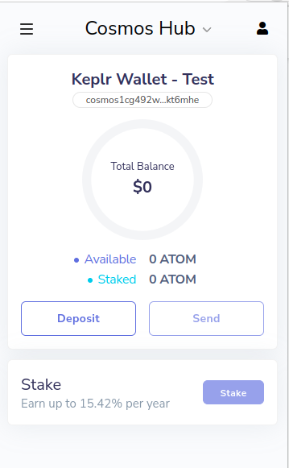
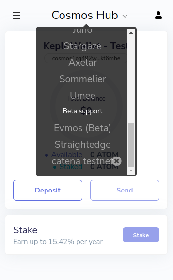
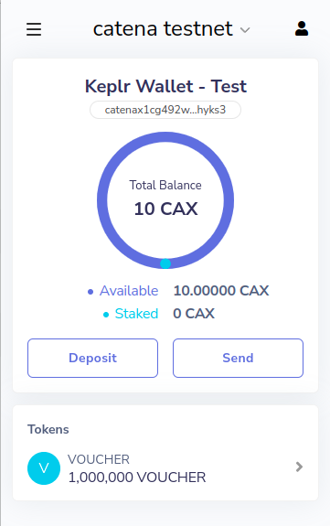

Wallet tutorial
Prerequisites
Build and launch the chain and frontend
Install Keplr extension
Install the keplr extension to chrome.
Use the wallet browser extension
Import the example/ test wallet
Click at the Keplr extension at the top right.
If there is no wallet configured you are taken to this page. Click on either on Create new account for a new account or on Import existing account to import an account with mnemonic.

NOTE: The password entered at the next page is used to secure the Keplr walled entirely and not just the account. All later added accounts are protected by this password too.
If you chose creating a new one, you have to enter your mnemonic at the last page by clicking at the words in the correct order to prove, you backed up the mnemonic.
This description chose Import existing account to import a prefunded test account.
Enter the following mnemonic for the prefunded test account.
`text
old square lecture frog curtain habit bunker casino awesome defy fashion cry wife rain outer scene fork leaf raven twin hen hurt calm bulb
`
Enter a password to unlock the Keplr extension in the future.
Do not modify the derivation path, which would result in a different account otherwise.
Clicking now on the icon should show an account similiar to the image below for the Cosmos Hub.
Clicking on Cosmos Hub shows the default chains, which Keplr knows. Our test chain is not contained in it yet.

Importing the chain into Keplr
Visit the vue app at http://localhost:5000/.
Keplr will ask for importing the suggested chain catenax-1. Approve it.

Now select the testnet catenax testnet.
This will show the accounts balance from the chain, which was locally start in the first terminal by starport chain serve.
Regarding chain suggestions
Suggesting a chain in a web app
The following snippet at [App.vue](../../vue/src/App.vue) makes the chain suggestion to the Keplr extension
import catenax_suggestion from './catenax-1-suggestion.json'
// ...
export default {
// ...
methods: {
async onWindowLoad() {
if (!window.getOfflineSigner || !window.keplr) {
alert("Please install keplr extension");
} else {
if (window.keplr.experimentalSuggestChain) {
try {
await window.keplr.experimentalSuggestChain(catenax_suggestion);
} catch {
alert("Failed to suggest the chain " + catenax_suggestion["chainName"]);
}
} else {
alert("Please use the recent version of keplr extension");
}
}
},
},
mounted: function () {
this.onWindowLoad();
},
// ...
}
Generation of the chain suggestion json
The [./catenax-1-suggestion.json](../../vue/src/catenax-1-suggestion.json) can be generated with the [keplr-suggestion command](../../cmd/keplr-suggestion/main.go). The command is currently missing a useful cli and parameters can be changed in the code.
Further information about the chain suggestion json can be found in Keplr’s documentation and its example repository.